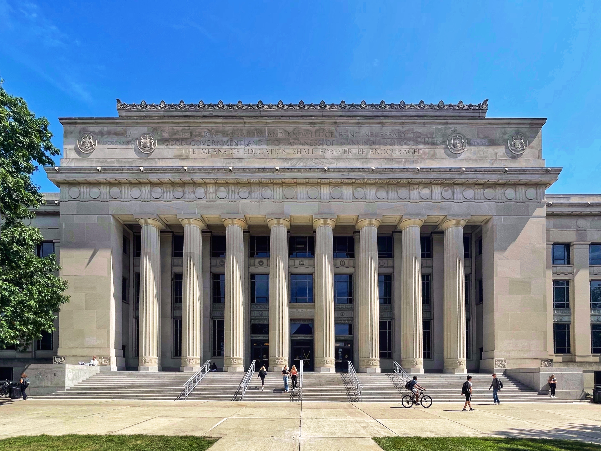
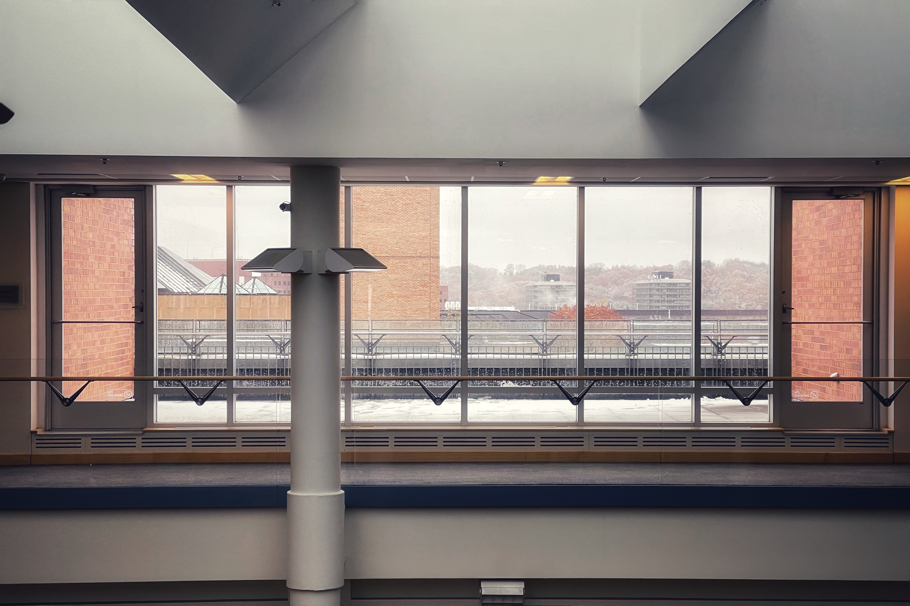
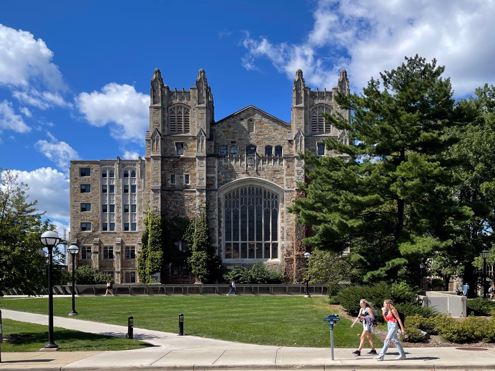
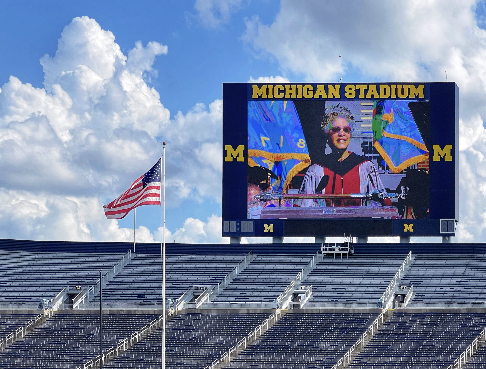
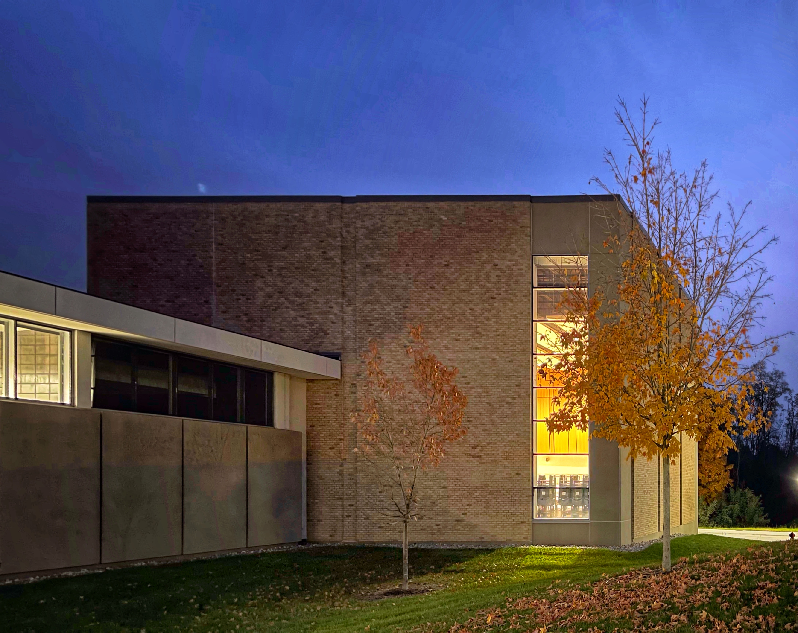

Welcome to My Personal Site
I am a sophomore at the University of Michigan and my major is CS. I enjoy traveling and photography and I have traveled to many countries and regions. I love different cultures, and I like to record different human and natural landscapes with my camera. I have put some of my photos and my thoughts on this website.
The University of Michigan (Michigan or UMich) is a public research university in Ann Arbor, Michigan. Founded in 1817 by an act of the old Michigan Territory, as the Catholepistemiad, or the University of Michigania, 20 years before the territory became a state, the university is Michigan's oldest. The institution was moved to Ann Arbor in 1837 onto 40 acres (16 ha) of what is now known as Central Campus, a U.S. historic district. Since its establishment in Ann Arbor, the university has expanded to include some 500 buildings spread out over the city. The university has been governed by an elected board of regents independently of the state since 1850, when the state's second constitution was officially adopted.
University of Michigan alumni include one U.S. president, eight NASA astronauts, 18 Pulitzer Prize winners, 25 Rhodes Scholars, and more than 30 presidents of various universities. As of October 2020, 26 University of Michigan alumni, professors and researchers have been awarded the Nobel Prize, one Fields Medal, and six Turing Prizes (eighth in the world). The vast majority of Michigan governors in history have come from the University of Michigan, including Rick Snyder, the 48th governor from 2011 to 2019. The University of Michigan is also one of the few cradles and gathering places in the U.S. that produces the Chinese elite.
The University of Michigan was founded in 1817 as the University of Michigania or Catholepistemiad, and the University of Michigan system has three campuses, the main campus in Ann Arbor and two smaller satellite campuses, the Dearborn and Flint campuses [8]. These three campuses are the three different universities within the University of Michigan system, with the term "University of Michigan" usually referring specifically to the University of Michigan, Ann Arbor campus, and the other two campuses having place names as suffixes: "University of Michigan-Dearborn The names of the other two campuses are suffixed with a place name: "University of Michigan-Dearborn" and "University of Michigan-Flint" to distinguish them.
Angell Hall is the building of umich central campus, it is connected with mason hall, I often go inside the newnan advising
BBB stands Bob and Betty Beyster Building, which is on the North Campus of the University of Michigan, and I like this building's revolving staircase best
The bell tower in the North Campus always gives me a solemn feeling, and I always hear the bell at the end of class.

The duder center is the library located on North Campus, which also has many music studios. I really like studying here.

The EECS building, as the name suggests, is the building where electrical engineering and computer science are located, and I have taken discussions and labs in this building

The law quad is located in the Central Campus, which is my favorite building, and I think it must be a joy to study in this building.
This is what inside Law school look like

Michigan stadium, also known as Big House, where football games are held every Saturday
The School of Music is also located on the North Campus where I take Voice classes.
